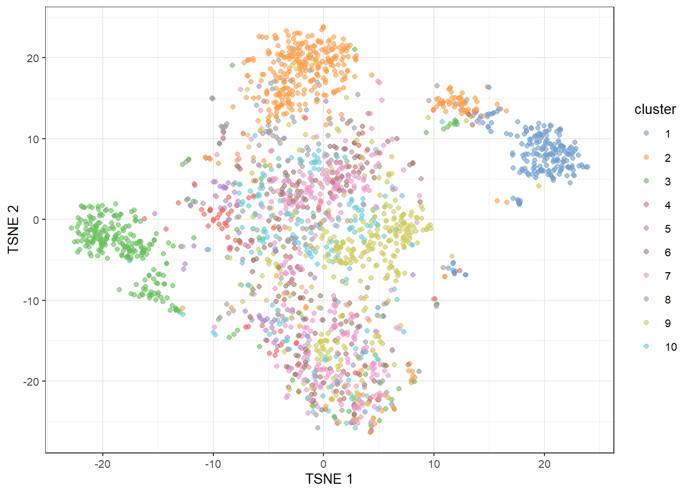
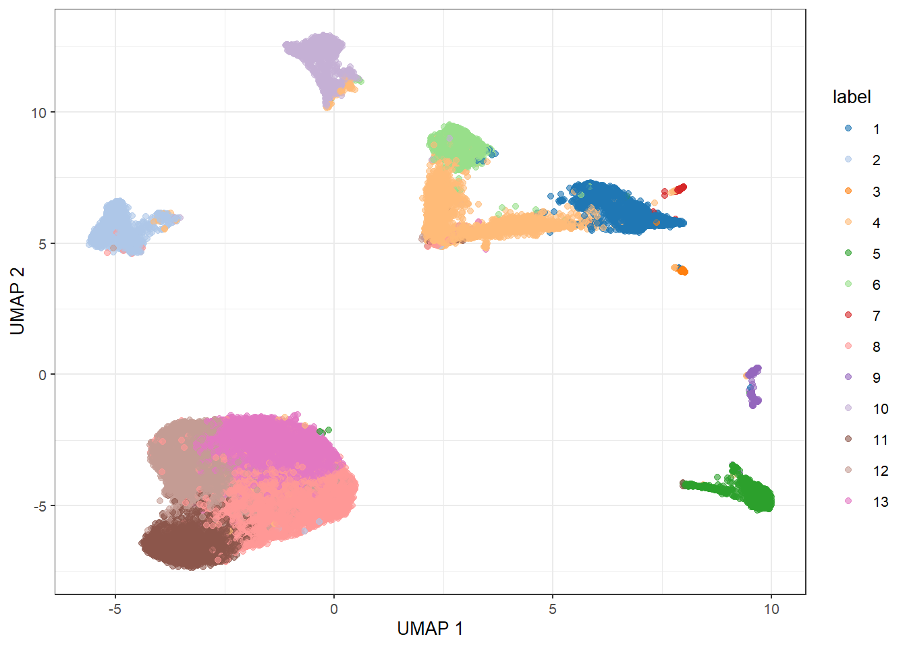
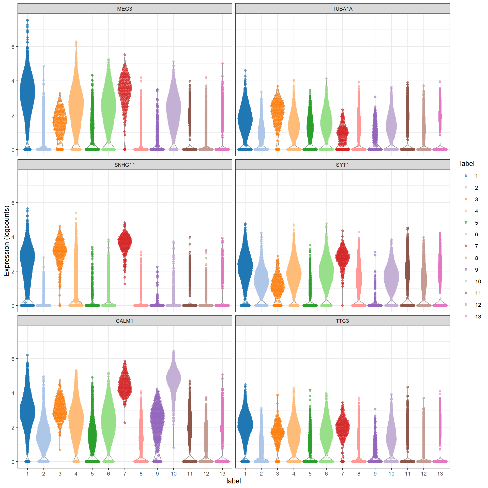

BiocManager::install("OSCA.basic")30 Single-cell analysis with Bioconductor
30.1 Setup
The “Orchestrating single-cell analysis with Bioconductor” (OSCA) online book describes common workflows for the analysis of single-cell RNA-seq data (scRNA-seq).
This includes employing a variety of Bioconductor packages for processing, analyzing, visualizing, and exploring scRNA-seq data.
The online book is a companion of the OSCA publication.
As a pre-requisite to this course, we need to install all packages required in the OSCA basic module. This can be conveniently achieved by using the install command from the BiocManager package.
30.2 Analysis overview (quick start)
In the simplest case, the typical scRNA-seq analysis workflow has the following form:
- We compute quality control metrics to remove low-quality cells that would interfere with downstream analyses. These cells may have been damaged during processing or may not have been fully captured by the sequencing protocol. Common metrics includes the total counts per cell, the proportion of spike-in or mitochondrial reads and the number of detected features.
- We convert the counts into normalized expression values to eliminate cell-specific biases (e.g., in capture efficiency). This allows us to perform explicit comparisons across cells in downstream steps like clustering. We also apply a transformation, typically log, to adjust for the mean-variance relationship.
- We perform feature selection to pick a subset of interesting features for downstream analysis. This is done by modelling the variance across cells for each gene and retaining genes that are highly variable. The aim is to reduce computational overhead and noise from uninteresting genes.
- We apply dimensionality reduction to compact the data and further reduce noise. Principal components analysis is typically used to obtain an initial low-rank representation for more computational work, followed by more aggressive methods like \(t\)-stochastic neighbor embedding for visualization purposes.
- We cluster cells into groups according to similarities in their (normalized) expression profiles. This aims to obtain groupings that serve as empirical proxies for distinct biological states. We typically interpret these groupings by identifying differentially expressed marker genes between clusters.

For demonstration of the typical workflow, we use the a droplet-based mouse retina dataset from Macosko et al., 2015 provided in the scRNAseq package. This starts from a count matrix and finishes with clusters in preparation for biological interpretation.
We start by loading all required packages.
library(scRNAseq)
library(scater)
library(scran)
library(bluster)We then proceed with carrying out the typical workflow steps through a series of designated commands.
# Obtain dataset as a SingleCellExperiment
sce <- MacoskoRetinaData()
# Quality control (using mitochondrial genes)
is.mito <- grepl("^MT-", rownames(sce))
qcstats <- perCellQCMetrics(sce, subsets = list(Mito = is.mito))
filtered <- quickPerCellQC(qcstats, percent_subsets = "subsets_Mito_percent")
sce <- sce[, !filtered$discard]
# Normalization
sce <- logNormCounts(sce)
# Feature selection
dec <- modelGeneVar(sce)
hvg <- getTopHVGs(dec, prop = 0.1)
# Dimensionality reduction (PCA)
sce <- runPCA(sce, ncomponents = 25, subset_row = hvg)
# Clustering
colLabels(sce) <- clusterCells(sce, use.dimred = "PCA",
BLUSPARAM = NNGraphParam(cluster.fun = "louvain"))
# Visualization
sce <- runUMAP(sce, dimred = "PCA")
# Marker detection
markers <- findMarkers(sce, test.type = "wilcox", direction = "up", lfc = 1)30.3 The SingleCellExperiment data container
One of the main strengths of the Bioconductor project lies in the use of a common data infrastructure that powers interoperability across packages. Users should be able to analyze their data using functions from different Bioconductor packages without the need to convert between formats.
To this end, the SingleCellExperiment class (from the SingleCellExperiment package) serves as the common currency for data exchange across 200+ single-cell-related Bioconductor packages. This class implements a data structure that stores all aspects of our single-cell data - gene-by-cell expression data, per-cell metadata and per-gene annotation - and manipulate them in a synchronized manner.

We start by loading the package.
library(SingleCellExperiment)Here we take a peak at the anatomy of a SingleCellExperiment by inspecting the components of the Macosko mouse retina dataset.
sceclass: SingleCellExperiment
dim: 24658 45877
metadata(0):
assays(2): counts logcounts
rownames(24658): KITL TMTC3 ... 1110059M19RIK GM20861
rowData names(0):
colnames(45877): r1_GGCCGCAGTCCG r1_CTTGTGCGGGAA ... p1_TAACGCGCTCCT
p1_ATTCTTGTTCTT
colData names(4): cell.id cluster sizeFactor label
reducedDimNames(2): PCA UMAP
mainExpName: NULL
altExpNames(0):Users familiar with the SummarizedExperiment class for storing bulk RNA-seq data will notice the similarity of the SingleCellExperiment class and the SummarizedExperiment class. In fact, the SingleCellExperiment class is a child of the SummarizedExperiment class.
In an object-oriented programming paradigm, this means that the SingleCellExperiment class inherits all methods from the SummarizedExperiment class. In practice, this means that we can work with a SingleCellExperiment very much in the same way that we are used to when working with a SummarizedExperiment.
This includes accessing experimental assay data via the assay acessor function.
assay(sce, "counts")[1:5,1:5]5 x 5 sparse Matrix of class "dgCMatrix"
r1_GGCCGCAGTCCG r1_CTTGTGCGGGAA r1_GCGCAACTGCTC r1_GATTGGGAGGCA
KITL . . 1 .
TMTC3 3 . . .
CEP290 1 3 . 2
4930430F08RIK 2 1 2 .
1700017N19RIK . . . .
r1_CCTCCTAGTTGG
KITL .
TMTC3 2
CEP290 1
4930430F08RIK 1
1700017N19RIK .assay(sce, "logcounts")[1:5,1:5]5 x 5 sparse Matrix of class "dgCMatrix"
r1_GGCCGCAGTCCG r1_CTTGTGCGGGAA r1_GCGCAACTGCTC r1_GATTGGGAGGCA
KITL . . 0.0670073 .
TMTC3 0.14677618 . . .
CEP290 0.05060284 0.17027364 . 0.1781196
4930430F08RIK 0.09949075 0.05901921 0.1310400 .
1700017N19RIK . . . .
r1_CCTCCTAGTTGG
KITL .
TMTC3 0.18501637
CEP290 0.09547205
4930430F08RIK 0.09547205
1700017N19RIK . And accessing the cell metadata stored in the colData slot.
colData(sce)DataFrame with 45877 rows and 4 columns
cell.id cluster sizeFactor label
<character> <integer> <numeric> <factor>
r1_GGCCGCAGTCCG r1_GGCCGCAGTCCG 2 28.0131 1
r1_CTTGTGCGGGAA r1_CTTGTGCGGGAA 2 23.9479 1
r1_GCGCAACTGCTC r1_GCGCAACTGCTC 2 21.0343 1
r1_GATTGGGAGGCA r1_GATTGGGAGGCA 2 15.2197 1
r1_CCTCCTAGTTGG r1_CCTCCTAGTTGG NA 14.6167 1
... ... ... ... ...
p1_TCAAAAGCCGGG p1_TCAAAAGCCGGG 24 0.610523 13
p1_ATTAAGTTCCAA p1_ATTAAGTTCCAA 34 0.610523 5
p1_CTGTCTGAGACC p1_CTGTCTGAGACC 2 0.610523 1
p1_TAACGCGCTCCT p1_TAACGCGCTCCT 24 0.609776 11
p1_ATTCTTGTTCTT p1_ATTCTTGTTCTT 24 0.609776 8 A useful shortcut for accessing variables of the colData is using the $ notation.
head(sce$sizeFactor)r1_GGCCGCAGTCCG r1_CTTGTGCGGGAA r1_GCGCAACTGCTC r1_GATTGGGAGGCA r1_CCTCCTAGTTGG
28.01308 23.94791 21.03429 15.21974 14.61669
r1_AGTCAAGCCCTC
14.33273 In addition to the basic fields inherited from SummarizedExperiment, the SingleCellExperiment also adds single-cell specific fields to the data structure.
Most importantly, the reducedDims slot is specially designed to store reduced dimensionality representations of the primary data obtained by methods such as PCA, t-SNE, and UMAP.
This slot contains a list of numeric matrices of low-reduced representations of the experimental assay data, where the rows represent the columns of the assay data (cells), and columns represent the dimensions. As this slot holds a list, we can store multiple PCA/t-SNE/UMAP results for the same dataset.
reducedDims(sce)List of length 2
names(2): PCA UMAPdim(reducedDim(sce, "PCA"))[1] 45877 25reducedDim(sce, "PCA")[1:5,1:5] PC1 PC2 PC3 PC4 PC5
r1_GGCCGCAGTCCG -10.39905 0.15677709 0.5330181 -4.540134 -1.018913
r1_CTTGTGCGGGAA -10.34839 0.47533936 0.3780652 -5.105311 -1.619633
r1_GCGCAACTGCTC -10.47332 0.39723149 0.7291247 -4.561465 -1.003403
r1_GATTGGGAGGCA -10.18998 0.08892315 -0.1959918 -4.980799 -1.841600
r1_CCTCCTAGTTGG -10.57438 0.12170276 0.2046049 -4.336352 -1.250160dim(reducedDim(sce, "UMAP"))[1] 45877 2head(reducedDim(sce, "UMAP")) [,1] [,2]
r1_GGCCGCAGTCCG -6.866276 5.599598
r1_CTTGTGCGGGAA -6.829534 5.562110
r1_GCGCAACTGCTC -6.916276 5.621826
r1_GATTGGGAGGCA -6.843490 5.564856
r1_CCTCCTAGTTGG -6.872377 5.589969
r1_AGTCAAGCCCTC 4.671948 5.242036Exercise: Subset the PCA representation to the first two PCs and store the result in the reducedDims slot under the name PCA2.
30.4 Data processing
30.4.1 Quality Control
Low-quality libraries in scRNA-seq data can arise from a variety of sources such as cell damage during dissociation or failure in library preparation (e.g. inefficient reverse transcription or PCR amplification).
These usually manifest as “cells” with low total counts, few expressed genes and high mitochondrial or spike-in proportions.
To avoid misleading results in downstream analyses, we need to remove the problematic cells at the start of the analysis. This step is commonly referred to as quality control (QC) on the cells.
Common choices of QC metrics are:
- library size: defined as the total sum of counts across all relevant features for each cell,
- number of expressed features: defined as the number of endogenous genes with non-zero counts for each cell,
- proportion of reads mapped to spike-in transcripts: calculated relative to the total count across all features (including spike-ins) for each cell.
In the absence of spike-in transcripts, the proportion of reads mapped to genes in the mitochondrial genome can be used. High proportions are indicative of poor-quality cells, presumably because of loss of cytoplasmic RNA from perforated cells. The reasoning is that, in the presence of modest damage, the holes in the cell membrane permit efflux of individual transcript molecules but are too small to allow mitochondria to escape, leading to a relative enrichment of mitochondrial transcripts.
We start by identifying mitochondrial genes in our SingleCellExperiment.
is.mito <- grepl("^MT-", rownames(sce))
table(is.mito)is.mito
FALSE TRUE
24627 31 rownames(sce)[is.mito] [1] "MT-TF" "MT-ND4" "MT-TV" "MT-RNR2" "MT-TS2" "MT-TL2" "MT-ND5"
[8] "MT-ND6" "MT-TE" "MT-CYTB" "MT-TT" "MT-TP" "MT-TL1" "MT-ND1"
[15] "MT-TI" "MT-TQ" "MT-TM" "MT-ND2" "MT-TW" "MT-TA" "MT-TN"
[22] "MT-TC" "MT-TY" "MT-CO1" "MT-RNR1" "MT-CO2" "MT-ATP6" "MT-CO3"
[29] "MT-ND3" "MT-ND4L" "MT-ATP8"For each cell, we then calculate QC metrics using the perCellQCMetrics function from the scater package.
qcstats <- perCellQCMetrics(sce, subsets = list(Mito = is.mito))
head(qcstats)DataFrame with 6 rows and 6 columns
sum detected subsets_Mito_sum subsets_Mito_detected
<numeric> <integer> <numeric> <integer>
r1_GGCCGCAGTCCG 37487 7243 427 14
r1_CTTGTGCGGGAA 32047 6933 503 15
r1_GCGCAACTGCTC 28148 6397 460 13
r1_GATTGGGAGGCA 20367 5740 326 11
r1_CCTCCTAGTTGG 19560 5779 264 9
r1_AGTCAAGCCCTC 19180 5221 253 12
subsets_Mito_percent total
<numeric> <numeric>
r1_GGCCGCAGTCCG 1.13906 37487
r1_CTTGTGCGGGAA 1.56957 32047
r1_GCGCAACTGCTC 1.63422 28148
r1_GATTGGGAGGCA 1.60063 20367
r1_CCTCCTAGTTGG 1.34969 19560
r1_AGTCAAGCCCTC 1.31908 19180The sum column contains the total count for each cell (library size). The detected column contains the number of detected genes (number of expressed features). The subsets_Mito_percent column contains the percentage of reads mapped to mitochondrial transcripts (proportion of reads mapped to mitochondrial genome).
We then identify low-quality cells as outliers for these frequently used QC metrics.
filtered <- quickPerCellQC(qcstats, percent_subsets = "subsets_Mito_percent")
head(filtered)DataFrame with 6 rows and 4 columns
low_lib_size low_n_features high_subsets_Mito_percent discard
<outlier.filter> <outlier.filter> <outlier.filter> <logical>
1 FALSE FALSE FALSE FALSE
2 FALSE FALSE FALSE FALSE
3 FALSE FALSE FALSE FALSE
4 FALSE FALSE FALSE FALSE
5 FALSE FALSE FALSE FALSE
6 FALSE FALSE FALSE FALSEtable(filtered$discard)
FALSE TRUE
45007 870 And eventually remove the identified low-quality cells from our SingleCellExperiment.
sce <- sce[,!filtered$discard]
sceclass: SingleCellExperiment
dim: 24658 45007
metadata(0):
assays(2): counts logcounts
rownames(24658): KITL TMTC3 ... 1110059M19RIK GM20861
rowData names(0):
colnames(45007): r1_GGCCGCAGTCCG r1_CTTGTGCGGGAA ... p1_TAACGCGCTCCT
p1_ATTCTTGTTCTT
colData names(4): cell.id cluster sizeFactor label
reducedDimNames(2): PCA UMAP
mainExpName: NULL
altExpNames(0):Exercise:
A useful diagnostic involves plotting the proportion of mitochondrial counts against some of the other QC metrics. The aim is to confirm that there are no cells with eg. both large total counts and large mitochondrial counts, to ensure that we are not inadvertently removing high-quality cells that happen to be highly metabolically active (e.g., hepatocytes).
Create a plot of library size (x-axis) against percentage of reads mapped to mitochondrial transcripts (y-axis). Color each point/cell by QC status, ie. whether the cell is kept or discarded from further analysis.
Do you observe any cells in the top-right corner of the plot? To what kind of cells might these correspond to?
30.4.2 Normalization
Systematic differences in sequencing coverage between libraries are often observed in single-cell RNA sequencing data. They typically arise from technical differences in cDNA capture or PCR amplification efficiency across cells Normalization aims to remove these differences such that they do not interfere with comparisons of the expression profiles between cells.
Here, we focus on scaling normalization, which is the simplest and most commonly used class of normalization strategies. This involves dividing all counts for each cell by a cell-specific scaling factor, often called a “size factor”.
We use the logNormCounts function from the scater package to compute normalized expression values for each cell. This is done by dividing the count for each gene with the appropriate size factor for that cell. The function also log-transforms the normalized values, creating a new assay called "logcounts". (Technically, these are “log-transformed normalized expression values”, but that’s too much of a mouthful to fit into the assay name.) These log-values will be the basis for all subsequent analyses.
sce <- logNormCounts(sce)
sceclass: SingleCellExperiment
dim: 24658 45007
metadata(0):
assays(2): counts logcounts
rownames(24658): KITL TMTC3 ... 1110059M19RIK GM20861
rowData names(0):
colnames(45007): r1_GGCCGCAGTCCG r1_CTTGTGCGGGAA ... p1_TAACGCGCTCCT
p1_ATTCTTGTTCTT
colData names(4): cell.id cluster sizeFactor label
reducedDimNames(2): PCA UMAP
mainExpName: NULL
altExpNames(0):assay(sce, "logcounts")[1:5,1:5]5 x 5 sparse Matrix of class "dgCMatrix"
r1_GGCCGCAGTCCG r1_CTTGTGCGGGAA r1_GCGCAACTGCTC r1_GATTGGGAGGCA
KITL . . 0.06766381 .
TMTC3 0.14817513 . . .
CEP290 0.05110146 0.17188351 . 0.1797992
4930430F08RIK 0.10045461 0.05959906 0.13229578 .
1700017N19RIK . . . .
r1_CCTCCTAGTTGG
KITL .
TMTC3 0.18675681
CEP290 0.09639826
4930430F08RIK 0.09639826
1700017N19RIK . 30.4.3 Feature Selection
Procedures like clustering and dimensionality reduction compare cells based on their gene expression profiles, which involves aggregating per-gene differences into a single (dis)similarity metric between a pair of cells. The choice of genes to use in this calculation has a major impact on the behavior of the metric and the performance of downstream methods. We want to select genes that contain useful information about the biology of the system while removing genes that contain random noise.
The simplest approach to quantifying per-gene variation is to compute the variance of the log-normalized expression values (i.e., “log-counts” ) for each gene across all cells.
Calculation of the per-gene variance is simple but feature selection requires modelling of the mean-variance relationship. The log-transformation is not a variance stabilizing transformation in most cases, which means that the total variance of a gene is driven more by its abundance than its underlying biological heterogeneity. To account for this effect, we use the modelGeneVar() function to fit a trend to the variance with respect to abundance across all genes.
dec <- modelGeneVar(sce)
head(dec)DataFrame with 6 rows and 6 columns
mean total tech bio p.value
<numeric> <numeric> <numeric> <numeric> <numeric>
KITL 0.008831083 0.011817944 0.011539348 2.78597e-04 0.4197562
TMTC3 0.052015623 0.076252434 0.067542702 8.70973e-03 0.1397003
CEP290 0.584435308 0.848403065 0.694966178 1.53437e-01 0.0320153
4930430F08RIK 0.053338509 0.069822873 0.069247222 5.75650e-04 0.4722040
1700017N19RIK 0.000483115 0.000554535 0.000632043 -7.75074e-05 0.8481758
MGAT4C 0.017340314 0.017807378 0.022630098 -4.82272e-03 0.9630805
FDR
<numeric>
KITL 1.000000
TMTC3 1.000000
CEP290 0.561275
4930430F08RIK 1.000000
1700017N19RIK 1.000000
MGAT4C 1.000000Visualize the fit:
fit <- metadata(dec)
plot(fit$mean, fit$var,
xlab="Mean of log-expression",
ylab="Variance of log-expression")
curve(fit$trend(x), col = "dodgerblue", add = TRUE, lwd = 2)At any given abundance, we assume that the variation in expression for most genes is driven by uninteresting processes like sampling noise. Under this assumption, the fitted value of the trend at any given gene’s abundance represents an estimate of its uninteresting variation, which we call the technical component. We then define the biological component for each gene as the difference between its total variance and the technical component. This biological component represents the “interesting” variation for each gene and can be used as the metric for HVG selection.
Ordering by most interesting genes for inspection:
ind <- order(dec$bio, decreasing = TRUE)
dec[ind,] DataFrame with 24658 rows and 6 columns
mean total tech bio p.value FDR
<numeric> <numeric> <numeric> <numeric> <numeric> <numeric>
RHO 3.41544 3.70486 2.449493 1.255363 8.58129e-06 5.74035e-04
CALM1 1.41066 2.32639 1.429140 0.897252 6.95943e-08 7.40731e-06
MEG3 0.87202 1.74991 0.971127 0.778785 8.67190e-12 2.03603e-09
GNGT1 3.21210 3.36933 2.605432 0.763893 6.95946e-03 1.76739e-01
SAG 3.21467 3.25067 2.603463 0.647204 1.85236e-02 3.81431e-01
... ... ... ... ... ... ...
H3F3B 1.49969 1.15205 1.51999 -0.367942 0.978848 1
HMGN1 1.90893 1.52887 1.98657 -0.457699 0.973358 1
HSP90AA1 1.78344 1.30193 1.81992 -0.517984 0.991517 1
MT-CYTB 2.08174 1.57470 2.22196 -0.647268 0.992727 1
MT-RNR2 3.45614 1.20942 2.42701 -1.217592 0.999987 1Once we have quantified the per-gene variation, the next step is to select the subset of HVGs to use in downstream analyses. The most obvious selection strategy is to take the top n genes with the largest values for the relevant variance metric.
Here, we select the top 10% of genes with the highest biological components.
hvg <- getTopHVGs(dec, prop = 0.1)
length(hvg)[1] 905head(hvg)[1] "RHO" "CALM1" "MEG3" "GNGT1" "SAG" "TRPM1"30.4.4 Dimensionality reduction
Dimensionality reduction aims to reduce the number of separate dimensions in the data. This is possible because different genes are correlated if they are affected by the same biological process. Thus, we do not need to store separate information for individual genes, but can instead compress multiple features into a single dimension. This reduces computational work in downstream analyses like clustering, as calculations only need to be performed for a few dimensions rather than thousands of genes.
30.4.4.1 Principal components analysis (PCA)
Principal components analysis (PCA) discovers axes in high-dimensional space that capture the largest amount of variation. In the context of scRNA-seq, our assumption is that biological processes affect multiple genes in a coordinated manner. This means that the earlier PCs are likely to represent biological structure as more variation can be captured by considering the correlated behavior of many genes.
This motivates the use of the earlier PCs in our downstream analyses, which concentrates the biological signal to simultaneously reduce computational work and remove noise.
Here, we restrict the PCA to the highly-variable genes and retain the top 25 PCs for further analysis.
sce <- runPCA(sce, ncomponents = 25, subset_row = hvg)
pca <- reducedDim(sce, "PCA")
dim(pca)[1] 45007 25pca[1:5,1:5] PC1 PC2 PC3 PC4 PC5
r1_GGCCGCAGTCCG -10.47089 0.16970918 -0.4811100 4.696597 0.9206715
r1_CTTGTGCGGGAA -10.42688 0.47419951 -0.3144957 5.307922 1.4892991
r1_GCGCAACTGCTC -10.54620 0.39601153 -0.6531475 4.737640 0.9271435
r1_GATTGGGAGGCA -10.26394 0.09917153 0.2666505 5.175493 1.6992644
r1_CCTCCTAGTTGG -10.61930 0.09928218 -0.1348716 4.507015 1.1091080Exercise:
Subset the SingleCellExperiment to all cells assigned to the first ten clusters by the authors of the mouse retina study (stored in the colData variable cluster). For the resulting object, plot the first two PCs and color each cell based on cluster membership using ggplot2.
Hint: see also the plotReducedDim function from the scater package.
30.4.4.2 Non-linear methods for visualization (t-SNE / UMAP)
The de facto standard for visualization of scRNA-seq data is the t-stochastic neighbor embedding (t-SNE) method (Van der Maaten and Hinton 2008). This attempts to find a low-dimensional representation of the data that preserves the distances between each point and its neighbors in the high-dimensional space. Unlike PCA, it is not restricted to linear transformations, nor is it obliged to accurately represent distances between distant populations. This means that it has much more freedom in how it arranges cells in low-dimensional space, enabling it to separate many distinct clusters in a complex population.
sce.sub <- subset(sce, , cluster %in% 1:10)
sce.sub <- runTSNE(sce.sub, dimred = "PCA")
sce.sub$cluster <- factor(sce.sub$cluster, levels = 1:10)
plotReducedDim(sce.sub, "TSNE", color_by = "cluster")
It is unwise to read too much into the relative sizes and positions of the visual clusters. t-SNE will inflate dense clusters and compress sparse ones, such that we cannot use the size as a measure of subpopulation heterogeneity. In addition, t-SNE is not obliged to preserve the relative locations of non-neighboring clusters, such that we cannot use their positions to determine relationships between distant clusters.
The uniform manifold approximation and projection (UMAP) method (McInnes, Healy, and Melville 2018) is an alternative to t-SNE for non-linear dimensionality reduction. It is roughly similar to t-SNE in that it also tries to find a low-dimensional representation that preserves relationships between neighbors in high-dimensional space. However, the two methods are based on different theory, represented by differences in the various graph weighting equations.
sce.sub <- runUMAP(sce.sub, dimred = "PCA")
plotReducedDim(sce.sub, "UMAP", color_by = "cluster")
Compared to t-SNE, the UMAP visualization tends to have more compact visual clusters with more empty space between them. It also attempts to preserve more of the global structure than t-SNE. From a practical perspective, UMAP is much faster than t-SNE, which may be an important consideration for large datasets. UMAP plots are therefore increasingly displacing t-SNE plots as the method of choice for visualizing large scRNA-seq data sets.
See also the dedicated section on interpreting guidelines for t-SNE and UMAP plots in the OSCA book.
30.4.5 Clustering
Clustering is an unsupervised learning procedure that is used to empirically define groups of cells with similar expression profiles. Its primary purpose is to summarize complex scRNA-seq data into a digestible format for human interpretation. This allows us to describe population heterogeneity in terms of discrete labels that are easily understood, rather than attempting to comprehend the high-dimensional manifold on which the cells truly reside. After annotation based on marker genes, the clusters can be treated as proxies for more abstract biological concepts such as cell types or states.
Popularized by its use in Seurat, graph-based clustering is a flexible and scalable technique for clustering large scRNA-seq datasets. We first build a graph where each node is a cell that is connected to its nearest neighbors in the high-dimensional space. Edges are weighted based on the similarity between the cells involved, with higher weight given to cells that are more closely related. We then apply algorithms to identify “communities” of cells that are more connected to cells in the same community than they are to cells of different communities. Each community represents a cluster that we can use for downstream interpretation.
Here, we use the clusterCells() function from the scran package to perform graph-based clustering using the Louvain algorithm for community detection. All calculations are performed using the top PCs to take advantage of data compression and denoising. This function returns a vector containing cluster assignments for each cell in our SingleCellExperiment object.
colLabels(sce) <- clusterCells(sce, use.dimred = "PCA",
BLUSPARAM = NNGraphParam(cluster.fun = "louvain"))
table(colLabels(sce))
1 2 3 4 5 6 7 8 9 10 11 12 13
3479 2517 181 4168 1851 2573 198 7293 480 2840 5422 5107 8898 We assign the cluster assignments back into our SingleCellExperiment object as a factor in the column metadata. This allows us to conveniently visualize the distribution of clusters in eg. a t-SNE or a UMAP.
sce <- runUMAP(sce, dimred = "PCA")
plotReducedDim(sce, "UMAP", color_by = "label")
Exercise: The Leiden algorithm is similar to the Louvain algorithm, but it is faster and has been shown to result in better connected communities. Modify the above call to clusterCells to carry out the community detection with the Leiden algorithm instead. Visualize the results in a UMAP plot.
Hint: The NNGraphParam constructor has an argument cluster.args. This allows to specify arguments passed on to the cluster_leiden function from the igraph package. Use the cluster.args argument to parameterize the clustering to use modularity as the objective function and a resolution parameter of 0.5.
30.4.6 Marker gene detection
To interpret clustering results as obtained in the previous section, we identify the genes that drive separation between clusters. These marker genes allow us to assign biological meaning to each cluster based on their functional annotation. In the simplest case, we have a priori knowledge of the marker genes associated with particular cell types, allowing us to treat the clustering as a proxy for cell type identity.
The most straightforward approach to marker gene detection involves testing for differential expression between clusters. If a gene is strongly DE between clusters, it is likely to have driven the separation of cells in the clustering algorithm.
Here, we perform a Wilcoxon rank sum test against a log2 fold change threshold of 1, focusing on up-regulated (positive) markers in one cluster when compared to another cluster.
markers <- findMarkers(sce, test.type = "wilcox", direction = "up", lfc = 1)
markersList of length 13
names(13): 1 2 3 4 5 6 7 8 9 10 11 12 13The resulting object contains a sorted marker gene list for each cluster, in which the top genes are those that contribute the most to the separation of that cluster from mall other clusters.
Here, we inspect the ranked marker gene list for the first cluster.
markers[[1]]DataFrame with 24658 rows and 16 columns
Top p.value FDR summary.AUC AUC.2
<integer> <numeric> <numeric> <numeric> <numeric>
MEG3 1 0.00000e+00 0.00000e+00 0.888463 0.845977
TUBA1A 1 9.44436e-93 1.55253e-89 0.618491 0.475081
SNHG11 1 0.00000e+00 0.00000e+00 0.739359 0.746507
SYT1 2 1.39150e-257 4.28896e-254 0.787200 0.445947
CALM1 2 0.00000e+00 0.00000e+00 0.819012 0.641825
... ... ... ... ... ...
VSIG1 24653 1 1 0 0
GM16390 24654 1 1 0 0
GM25207 24655 1 1 0 0
1110059M19RIK 24656 1 1 0 0
GM20861 24657 1 1 0 0
AUC.3 AUC.4 AUC.5 AUC.6 AUC.7 AUC.8
<numeric> <numeric> <numeric> <numeric> <numeric> <numeric>
MEG3 0.6823435 0.452022 0.806585 0.478549 0.1814640 0.888463
TUBA1A 0.1177991 0.314720 0.425543 0.291106 0.4608110 0.551061
SNHG11 0.0780595 0.552940 0.742181 0.705132 0.0224885 0.742499
SYT1 0.5334295 0.312969 0.787200 0.306610 0.0587842 0.558274
CALM1 0.1535273 0.382751 0.720211 0.427866 0.0121595 0.790286
... ... ... ... ... ... ...
VSIG1 0 0 0 0 0 0
GM16390 0 0 0 0 0 0
GM25207 0 0 0 0 0 0
1110059M19RIK 0 0 0 0 0 0
GM20861 0 0 0 0 0 0
AUC.9 AUC.10 AUC.11 AUC.12 AUC.13
<numeric> <numeric> <numeric> <numeric> <numeric>
MEG3 0.851448 0.48777190 0.868714 0.876063 0.868428
TUBA1A 0.510270 0.33683924 0.557312 0.568311 0.618491
SNHG11 0.747063 0.74284864 0.739116 0.746561 0.739359
SYT1 0.824606 0.39838052 0.574880 0.574974 0.636706
CALM1 0.441906 0.00711705 0.753439 0.831255 0.819012
... ... ... ... ... ...
VSIG1 0 0 0 0 0
GM16390 0 0 0 0 0
GM25207 0 0 0 0 0
1110059M19RIK 0 0 0 0 0
GM20861 0 0 0 0 0The Top field provides the the minimum rank across all pairwise comparisons. The p.value field provides the combined p-value across all comparisons, and the FDR field the BH-adjusted p-value for each gene. The summary.AUC provides area under the curve (here the concordance probability) from the comparison with the lowest p-value, the AUC.n fields provide the AUC for each pairwise comparison. The AUC is the probability that a randomly selected cell in cluster A has a greater expression of gene X than a randomly selected cell in B.
We can then inspect the top marker genes for the first cluster using the plotExpression function from the scater package.
top.markers <- head(rownames(markers[[1]]))
plotExpression(sce, features = top.markers, x = "label", color_by = "label")